За полазнике
За тренере
За полазнике
За тренере
Модул 16: Алати и технике за верификацију
Опис модула
Главни циљ овог модула је да објасни алате и методе које се могу користити за верификацију (проверу истинитости).
Секундарни циљ је да усмери тренере који желе да користе садржај овог модула за обуку својих полазника.
Уз ове циљеве, представљени су алати и методе које се могу користити у процесу верификације, заједно са смерницама о томе како се предмет предаје.
Полазници који успешно заврше овај модул моћи ће да:
- разликују концепте провере чињеница и верификације
- разумеју важност верификације
- разумеју четири кључна елемента којима се треба позабавити приликом верификације
- примењују методе верификације слике и видео-записа и користе потребне алате
- примењују методе верификације локације и користе алате
- примењују неопходне методе и користите неопходне алате да би верификовали било који налог на друштвеним мрежама
- примењују неопходне методе и користите потребне алате да би верификовали било који веб-сајт
- примењују методе откривања ботова и тролова и употребљавају потребне алате
Поред тога, тренери који успешно заврше овај модул, моћи ће са већим разумевањем да подучавају различите алате и технике за верификацију у зависности од садржаја (нпр. слика, видео-запис, локација, налог на друштвеним мрежама, веб-сајт).
(*) Case studies in Module 16 were prepared by Esra Özgür from Teyit.org. Teyit.org is the associate partner of Hacettepe University in this project.
Структура модула
Овај модул се састоји из следећих целина:
- Циљ, опис садржаја и исходи учења
- Структурa модула
- Смернице за полазнике
- Смернице за тренере (како се припремити, методе које треба користити и савети за тренере)
- Садржај (материјал за учење и вежбање)
- Квиз
- Референце (цитирани извори, препоручени извори и видео-записи)
Главни циљеви модула, опис садржаја и исходи учења објашњени су у делу Опис модула. Смернице за полазнике укључују упутства и сугестије за полазнике. Смернице за тренере воде тренере кроз различите фазе обуке и дају савете који би могли да буду корисни током предавања предмета. Садржај обухвата све материјале за учење и вежбања везана за садржај. Квиз укључује питања на која се одговара са тачно или нетачно како би полазници тестирали свој напредак. Одељак Референце обухвата списак извора цитираних у садржају модула и листу додатних извора и видео-записа који се препоручују за читање и гледање како би се проширило знање о овој теми.
Смернице за полазнике
Од полазника се очекује да прочитају текст, погледају препоручене видео-записе и ураде вежбања. Они могу да консултују предложене ресурсе за додатне информације. Након проучавања садржаја, полазницима се препоручује да ураде квиз како би проценили свој напредак. Уколико је потребно, могу поново проучити материјал за учење.
Смернице за тренере
Смернице за тренере укључују сугестије и савете о томе како да користе садржај овог модула за обуку полазника.
Припрема
Припремите презентацију (Пауерпоинт/Прези/Канва) која је обогаћена визуелним материјалима (слике и видео клипови) и јасним примерима. Примере и вежбања у овом модулу прилагодите темама која су познатије конкретној циљној групи. Одабир локалних примера (специфичних за државу) у вези са актуелним или добро познатим проблемима помоћи ће да се јасније илуструје суштина и додатно скрене пажња полазницима. Што су примери познатији и популарнији, то ћете боље пренети поруку.
Почетак
Како бисте увели полазнике у тему, на почетку можете користити кратак квиз (3 до 5 питања) направљен у Кахуту или им поставити питања путем Ментиметар апликације. Поменути квиз и питалице се могу користити као мотивационо средство и средство за проверу постојећег знања полазника о овој теми. Питања, на пример, могу бити: Шта је верификација? Да ли користите неке алате за верификацију?
Методологија
Током обуке могу се комбиновати различите наставне методе:
- Предавања
- Дискусије
- Рад у групама
- Самопроцењивање
Савети за тренере
Загревање
Ефикасан начин укључивања полазника и утврђивања заједничких очекивања о томе шта ће научити јесте постављање неколико прелиминарних питања о овој теми. Ово се може урадити кроз групни рад, тако што ћете замолити полазнике да дискутују и прикупе идеје, или кроз индивидуални рад, тако што ћете замолити сваког полазника да напише своје идеје на самолепљивим папирићима. Активност се може спровести на следећи начин:
- Питајте полазнике да ли се сусрећу са некаквим садржајем (слику, текст, видео, итд.) на друштвеним мрежама у чију тачност сумњају.
- Можете их питати да ли, када наиђу на сумњив садржај, покушавају да верификују овај садржај.
- Питајте их које кораке предузимају када покушавају да провере сумњив садржај.
Представљање циља лекције
Циљ лекције треба да буде јасан (који алати и методе се могу користити за верификацију). Након питања за загревање, лакше ћете разјаснити циљеве.
Представљање садржаја лекције
Приликом представљања садржаја, водите рачуна о интеракцији са полазницима и подстакните их на активно учешће.
- Приликом извођења едукације у овом модулу, важно је ко је циљна публика, јер вештине верификације захтевају ефикасно коришћење рачунара или мобилних уређаја и алата за претраживање. Такве техничке вештине могу варирати у зависности од различитих фактора (попут година, нивоа образовања). На пример, старијим особама може бити тешко да користе методе и алате за верификацију уколико не могу адекватно да користе рачунар или мобилне уређаје и алате за претраживање. Због тога се такви полазници могу обучити за употребу једноставнијих алата (као што су Гугл и његови под-алати). Насупрот томе, полазницима (као што су студенти) са ефикаснијим вештинама коришћења релевантних алата можда ће бити потребно детаљније знање о методама и алатима верификације него што је понуђено. У овом случају могу се користити ресурси из одељка Препоручени извори.
- Да би се ефективно подучавали алати и методе верификације, предност треба дати полазницима и њиховом вежбању алата и метода током курса. Ако је могуће, питања за вежбу/студије случаја треба да буду припремљена унапред и полазници треба да буду у могућности да одговоре на ова питања користећи алате и методе које су научили у оквиру курса.
- Током практичног дела обуке, питајте полазнике да ли имају потешкоћа са неким задатком. На тај начин ћете јасније разумети који делови предмета нису у потпуности схваћени. Ове делове можете поновити и обогатити примере који се односе на ову целину.
- Приликом објашњавања предмета укључите примере из свакодневног живота.
- Током обуке могу се користити локални и међународни примери. Ово ће помоћи полазницима да усвоје предмет.
Закључак
Направите кратак резиме лекције и поставите неколико питања која ће помоћи да истакнете најважније поруке које желите да пренесете.
Следеће питање може помоћи:
- Питајте полазнике који су то елементи на које треба обратити пажњу приликом верификације.
Када долазите до закључка, уверите се да полазници разумеју да постоји велики број метода и алата који се могу користити за проверу различитих врста садржаја.
Садржај: Алати и технике за верификацију
Увод
Пре давања информација о алатима и методама верификације, корисно је објаснити шта верификација значи и зашто је она важна.
Шта су верификација и провера чињеница?
Верификација и провера чињеница су две одвојене новинарске праксе које се често користе наизменично. Иако се чини да су ова два концепта блиско повезана, међу њима постоје разлике које понекад могу изазвати забуну (Mantzarlis, 2015; Silverman, 2020b). Данас, упоредо са ширењем проблема мисинформација и дезинформација, ови појмови су престали да буду само новинарска пракса, већ су се претворили у вештине које сваки грађанин треба да поседује на основном нивоу.
Верификација је процес којим се процењује тачност вести пре него што постане “вест”. Фокусира се посебно на садржај који генерише корисник. Више пажње посвећује поузданости извора тврдње (Mantzarlis, 2015, 2018). Провера чињеница је, с друге стране, процес који се одвија након објављивања и упоређује отворену тврдњу изнету јавно са поузданим и аутентичним изворима. Такође се фокусира на логику, кохерентност и контекст тврдње (Mantzarlis, 2015). У ствари, може се рећи да је провера чињеница значајно прешла са традиционалног емитовања на поље политичког новинарства. Другим речима, провера чињеница у свом садашњем смислу све више се фокусира на контролу изјава политичара и других јавних личности (Silverman, 2020b).
Разоткривање је, с друге стране, подскуп верификације и захтева одређени скуп вештина које су заједничке са верификацијом (Mantzarlis, 2018). У случајевима када није могуће спречити лажне информације, важно је да се оне разоткрију. Јасно објашњење зашто су информације погрешне и шта је заправо тачно осигурава да је разоткривање делотворно. Ако разоткривање није детаљно представљено, мисинформације и дезинформације могу да опстану (Lewandowsky et al, 2020, стр. 4).

Извор: Mantzarlis, 2018, стр. 83
Проверљивост
Пре провере било ког садржаја, важно је да се уверите да је повезан са догађајем који се заиста догодио (Urbani, 2019, стр. 10). Ако нема догађаја који је наведен у садржају, нема смисла верификовати тај садржај. Дакле, да би се испитала тачност изречене тврдње, неопходно је пронаћи доказе у вези са том тврдњом. На пример, пошто су лична мишљења заснована на осећањима људи, мисли и идеје су субјективне и не могу се проверити.
Значај верификације
Чињеница да су паметни телефони постали део наших живота, упоредо са развојем технологије, омогућила је свима да лако снимају видео-записе, деле и шире ове садржаје које су директно произвели. Нарочито је широко распрострањена употреба платформи друштвених медија обезбедила такво окружење за свакога ко може да користи неке основне алате попут паметних телефона или рачунара. Људи такође могу производити и делити са својих налога на друштвеним мрежама неке садржаје вредне да се објаве као вести. Када је у питању садржај вредан вести, новинске организације и платформе такође могу имати користи од таквог садржаја који генеришу корисници (Wardle, n.d., стр. 25-26). Међутим, ово захтева узимање у обзир ризика да садржај може садржати лажне информације, намерно или ненамерно. На пример, поједини људи креирају лажне веб-сајтове или налоге на друштвеним мрежама, манипулишу сликама или видео-записима или деле погрешно означен садржај из старих вести да би помогли у обмани новинских организација и јавности (Wardle, n.d., стр. 26). Нарочито у кризним и ванредним ситуацијама (као што су природне катастрофе, терористички напади, несреће), објаве људи могу бити погрешно запамћене или погрешно повезане, а могу имати и ограничену перспективу (Buttry, n.d., стр. 16). Коришћење ових садржаја и њихово дељење од стране других корисника доводи до ширења лажних информација. У ствари, онлајн платформе се налазе на челу окружења у којем се лажне вести и мисинформације најшире и најбрже дистрибуирају (Vosoughi, Roy & Aral, 2018, стр. 1146). Стога, верификација има веома важну улогу против проблема мисинформисања и дезинформисања који могу значајно утицати на људски живот (Wardle, n.d., стр. 26).
Верификација је важна вештина која се може извршити коришћењем бесплатних онлајн алата и традиционалних новинарских техника. Када је у питању провера садржаја који генерише корисник, ниједна технологија не може да обезбеди стопостотну аутоматску верификацију. С друге стране, традиционалне истраживачке технике и људско око нису довољне. У идеалном случају, требало би заједно користити две методе да би се пронашао тачан одговор (Wardle, n.d., стр. 27).
Када је у питању садржај или информације које генеришу корисници путем друштвених мрежа, постоје четири кључна елемента посебно која треба проверити (Urbani, 2019, стр. 11; Silverman & Tsubaki, n.d., стр. 98-100; Wardle, n.d., стр. 27):
- Порекло: Провера аутентичности садржаја. (Да ли је то оригинални налог или садржај?) Претраживање различитих верзија садржаја, настојање да се дође до прве верзије, испитивање другог сродног садржаја.
- Извор: Ко је креирао/отпремио садржај? Испитивање особе/организације/налога који је креирао, отпремио или поделио садржај. Испитивање других налога који могу бити повезани са овим људима/налозима.
- Датум: Провера датума догађаја. (Када је садржај произведен?)
- Локација: Провера локације догађаја. (Где је креиран садржај/налог/веб локација? Где је снимљен/пронађен део садржаја?)
Поред овога, разумевање мотивације за креирање/дељење садржаја испитивањем зашто је креиран налог/веб-сајт или зашто је део садржаја искоришћен може допринети процесу верификације других елемената (Urbani, 2019, стр. 50). Након покушаја да се верификује оригинални извор и садржај, информацијама о пореклу, извору, датуму и месту, потребно је упоредити информације и дискутовати о њиховој тачности унакрсном провером различитих извора (Silverman & Tsubaki, n.d., стр. 98).
Постоје неки извори који могу послужити као водич, посебно на тему како утврдити да ли су информације које се преносе као вести лажне или не:
- How to stop fake news (Kiely & Robertson, 2016; IFLA, 2017)
- Don’t get fooled: 7 simple steps (News Literacy Project, 2021)
Извор: IFLA, 2017 (CC BY 4.0)

Извор: News Literacy Project, 2021
Када појединци немају времена за верификацију или када су нечије вештине верификације недовољне да процене истинитост садржаја, могу се консултовати библиотекари и платформе за верификацију које се професионално баве верификацијом (IFLA, 2017; Kiely & Robertson, 2016). Поред тога, пре започињања процеса верификације за сумњиви садржај, прво се може проверити да ли је тај садржај раније верификован. У ту сврху може се користити алат Google Fact Check Explorer.

Извор: Google Fact Check Explorer
Процес верификације може захтевати истраживање великог броја различитих детаља у зависности од садржаја који је потребан да се верификује. У том контексту, постоји низ корака као што су верификација слике и видео-записа, верификација локације, верификација сумњивог налога на друштвеним мрежама, верификација веб-сајта, откривање ботова и тролова.
Верификација слике и видео-записа
Фотографије и видео-записи имају активно место у комуникацији, посебно на друштвеним мрежама јер су убедљиви и интригантни. Слике и видео-записи који се укључују у комуникацију се веома лако креирају, али и модификују. Ова ситуација је учинила фотографије и видео-записе важним алатима који се могу користити за мисинформисање и дезинформисање. Фотографије и видео-записи који доводе у заблуду и који се посебно користе ван контекста су чешћи (види Део 1, Модул 2) (Vis, Faulkner & Guy, 2020).
Верификација слике
Процес верификације слике се фокусира не само на фотографије, већ и на сложене слике, мимове, графике и снимке екрана (Vis, Faulkner & Guy, 2020). Тражење извора слике обично укључује проналажење информација о томе ко је поставио или снимио слику, итд. (Barot, n.d., стр. 37). Информације овог типа можете пронаћи помоћу обрнуте претраге слика. Поред овога, обрнутом претрагом слика, можете истражити информације попут: да ли је слика раније била дељена, на којим платформама је дељена, у ком контексту и ко ју је делио.
Приликом верификације фотографија фокусирајте се на следећих пет питања како бисте дошли до одговора (Urbani, 2019):
- Да ли гледате оригиналну верзију?
- Да ли знате ко је снимио фотографију?
- Да ли знате где је фотографија снимљена?
- Да ли знате када је фотографија снимљена?
- Да ли знате зашто је фотографија снимљена?
Могуће је пратити ова питања на следећи начин:

Извор: Urbani, 2019
Поред ових питања, следећих пет питања у вези са испитивањем слика на друштвеним мрежама подржаће процес верификације слике (Vis, Faulkner & Guy, 2020).
- Шта је то?
- Шта приказује?
- Ко је то направио?
- Шта је то тада значило?
- Шта то сада значи?
Прва три питања, као и друга питања за верификацију, више се тичу порекла и извора слике. Последња два питања нас наводе да размислимо о значењу слике и да преиспитамо различита значења која настају током употребе слике (Vis, Faulkner & Guy, 2020). Ова два питања нам могу помоћи да препознамо и проценимо обмањујући садржај, лажни контекст и сличне употребе са којима се сусрећемо у оквиру информацијског поремећаја (види Део 1, Mодул 2).
Метода обрнуте претраге слика се може користити приликом истраживања порекла и извора слика, а такође се могу упоредити сличне слике и проверити ЕКСИФ подаци (енг. EXIF data) слике. ЕКСИФ подаци могу бити водич за проверавање информација о датумима на сликама. Поред тога, информације о локацији слике су још један елемент који треба испитати.
Обрнута претрага слике
Обрнута претрага слике (енг. reverse image search) спроводи се на платформама као што су Google Images, Yandex Image Search, Bing и TinEye. Да би се извршила обрнута претрага слике, сама слика или линк (енг. URL) слике се претражују на платформама за претрагу слика. Током ове претраге проверава се да ли постоји подударање са овом сликом на интернету. Уколико постоји подударање, оно се приказује на листи резултата. Ако су примљени различити линкови исте слике, могу се испитати различита величина слика на овим линковима. Генерално, очекује се да ће слика највеће резолуције/величине довести до оригиналног извора. Можете да разумете да ли је извор оригиналан упоређујући га са сликом коју имате (Barot, n.d., стр. 37; Silverman & Tsubaki, n.d., стр. 98-99). Опција Гугл обрнуте претраге слика не може се видети на свим мобилним уређајима. Ова опција претраге може да се користи уколико је релевантан линк отворен на десктоп верзији претраживача. Ако желите да покренете претрагу слика помоћу мобилног уређаја, можете да изаберете алате као што су Yandex Image Search, Bing и TinEye.
Пример: У чланку објављеном на друштвеним мрежама наводи се да је слику испод поделила Бритни Спирс. Хајде да испитамо тачност ове тврдње обрнутом претрагом слике.


Извор: Google Images

Извор: Google Image Search
Претрагу вршимо тако што у поље за претрагу налепимо линк слике коју ћемо тражити. Чини се да међу резултатима постоји налог на друштвеној мрежи са истом сликом.

Извор: Google Image Search Results
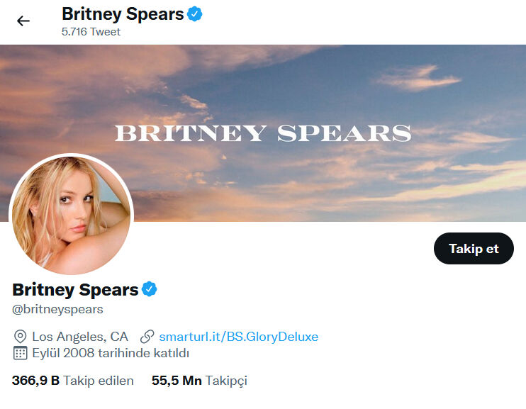
Када се кликне на налог друштвене мреже у листи резултата, види се да налог има плаву квачицу. Дакле, чини се да је то верификовани налог и да припада Бритни Спирс. Поред тога, постоје и неке додатне информације које се односе на особу, као што су линк ка веб-сајту, информације о локацији, датум креирања налога.
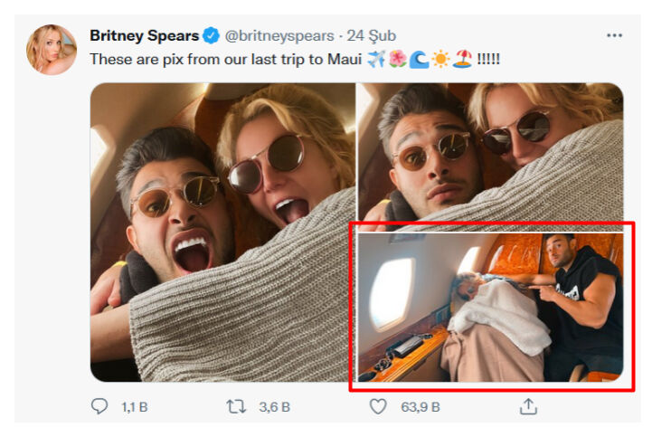
Извор: Britney Spears’ Tweet
Када се испитају твитови који су објављени на налогу, види се да је слика која је предмет нашег истраживања међу дељеним садржајем.
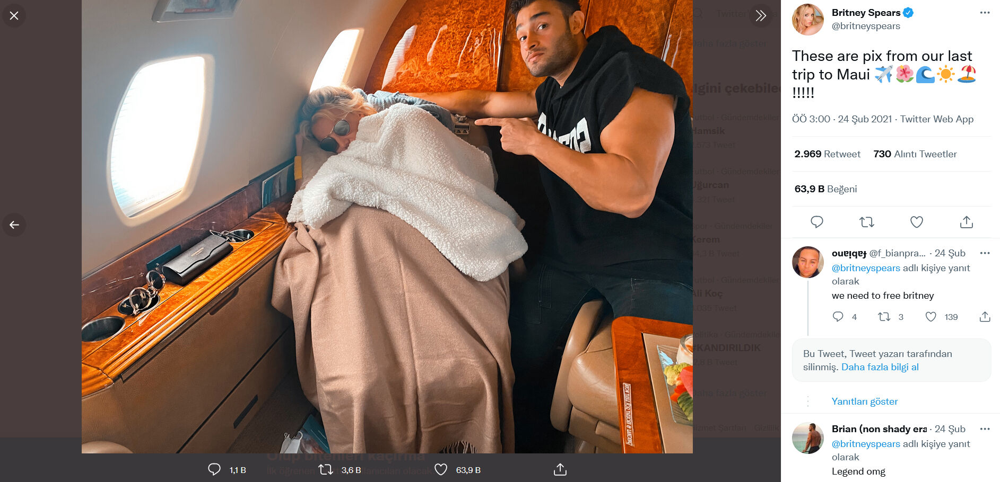
Извор: Britney Spears’ Tweet
Док је Гуглова функција обрнуте претраге слика с времена на време недовољна, Yandex може дати боље резултате (Toler, 2019). Поред Google Images, Yandex Image Search, TinEye, и Bing можете истовремено претраживати сличне слике на више платформи тако што ћете десним тастером миша кликнути на фотографију у прегледачу користећи RevEye екстензију за Хром прегледач.
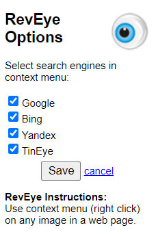
Извор: RevEye Reverse Image Search
Постоје и случајеви када претраживачи нису довољни у процесу обрнуте претраге слика. Ови алати можда неће увек бити успешни у проналажењу слика, посебно на друштвеним мрежама као што су Твитер, Инстаграм, Фејсбук (Zadrozny, 2020).
ЕКСИФ подаци (енг. EXIF data)
Још један корак који треба применити у верификацији слике је провера да ли постоји монтажа на слици. Да бисте ово истражили можете проверити ЕКСИФ податке слике (Barot, n.d., стр. 38; Silverman & Tsubaki, n.d., стр. 99). За проверу ЕКСИФ података могу се користити алати као што су Foto Forensics, View and Remove EXIF Online, Jeffrey's Image Metadata Viewer.
Foto Forensics: Може се користити за разумевање монтиране слике. Алат омогућава некоме да пронађе ЕКСИФ (метаподатке) слике и види анализу нивоа грешке (енг. ELA - error level analysis) слике. Ова платформа такође може да пружи информације као што су модел камере, временска ознака слике и димензије оригиналне слике (Silverman & Tsubaki, n.d., стр. 99).
Пример: Погледајмо тврдњу да фотографија приказује грчку заставу окачену на џамији у Диметоки.
Извор: Тврдња да се на фотографији види грчка застава која виси на џамији у Диметоки
Према тврдњи која се брзо проширила медијима у Турској, застава Грчке окачена је на минарету отоманске џамије у Диметоки. Међутим, тврдња није тачна. Оригинална слика је из 2015. године, а грчка застава је додата касније. Када се фотографија коју је објавила DHA претражи обрнутом претрагом слика, долази се до садржаја из 2015 објављеног на сајту под називом e-evros.gr, који емитује програм из региона Еврос са грчком екстензијом.
Пажљивији поглед на фотографију открива да су светло и предлог заставе који је додат касније некомпатибилни са остатком фотографије. На монтираној фотографији застава изгледа прилично вештачко и не под уобичајеним углом. Анализа помоћу веб-сајта Fotoforensics такође потврђује да је слика манипулисана (Teyit, 2020, June 1).

Већина платформи друштвених мрежа као што су Твитер, Фејсбук, Инстаграм (осим Фликра (енг. Flickr)) брише већину метаподатака садржаних у сликама када се слике отпреме на њихову платформу (Barot, n.d.). Сходно томе, постаје тешко приступити ЕКСИФ подацима слика на таквим платформама.
Сличност
Поред обрнуте претраге слика и провере ЕКСИФ информација, постоје и алати попут Face++ који вам говоре о вероватноћи да две фотографије припадају истој особи (Zadrozny, 2020). Ови алати могу бити посебно корисни када истражујете профилну фотографију на налогу друштвених мрежа.
Пример: Да ли је ова фотографија снимљена на скупу Трампоих присталица у Вашингтону после избора?
Када су 6. јануара 2021. потврђени коначни резултати председничких избора у САД, део Трампових присталица, који је протестововао у Вашингтону, пробио је обезбеђење и ушао у зграду Конгреса. У престоници је проглашен полицијски час због оружаних инцидената испред и унутар зграде. Тада је почела да кружи фотографија са тврдњом и на кинеском и на енглеском, која наводно приказује гомилу на митингу.

Гуглова обрнута претрага слика открила је да фотографија заправо приказује митинг против оружаног насиља који је одржан у Вашингтону у марту 2018. године, а објавио је Вашингтон пост. Заслуга је приписана фоторепортеру Салвану Џорџу (Salwan Georges). Истог дана, Џорџу је посредством свог Твитер налога одбацио лажну тврдњу о својој фотографији (Teyit, 2021, January 7).
Информације о локацији
Наговештаји као што су регистарске таблице или нумеричке ознаке на возилима, временски услови, оријентири, врста одеће, натписи, препознатљива продавница или зграда, врста терена/окружења на снимку могу се тражити како би се потврдила локација и време када је фотографија снимљена (Barot, n.d.).
Све ово може помоћи у добијању важних информација када су у питању фотографски детаљи. Они се могу проверити помоћу алата као што су Google Maps, Google Street View, Yandex Maps, Google Earth (Silverman & Tsubaki, n.d., стр. 102). Детаљније информације о верификацији локације налазе се у одељку “Верификација локације”.
Верификација видео-записа
Видео-записи се могу изменити, као и слике. Конкретно, видео-записи које генеришу корисници се можда неће појавити у свом оригиналном облику (Browne, n.d., стр. 47). Приликом верификације видео-записа, као и слика, могуће је доћи до одговора фокусирајући се на следећих пет питања (Urbani, 2019):
- Да ли гледате оригиналну верзију?
- Да ли знате ко је снимио видео-запис?
- Да ли знате где је видео-запис снимљен?
- Да ли знате када је видео-запис снимљен?
- Да ли знате зашто је видео-запис снимљен?
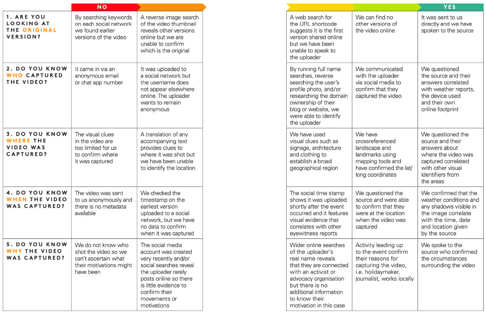
Извор: Urbani, 2019
Одговори на сродна питања могу се тражити као што је приказано на слици. У овој фази, метаподаци повезани са видео снимком такође могу помоћи у добијању детаља о оригиналном извору, датуму и локацији (Browne, n.d., стр. 47).
У процесу видео верификације, први корак је испитивање порекла видео-записа. Видео-записи обично садрже описе, ознаке, коментаре и сличне информације за идентификацију. Користећи ове информације, могу се креирати различите кључне речи. Претрагом са овим кључним речима, могу се пронаћи најстарији видео снимци који се подударају. На пример, ако претражујете на Јутјубу, видео-записи се могу сортирати у складу са тим тако што ћете изабрати опцију “датум отпремања” у менију “Филтери”. Тако можете да приступите најстаријим одговарајућим видео-записима. Уколико су информације за идентификацију у видео снимку на страном језику, Гугл преводилац и слични алати за превођење могу се користити за превођење ових информација (Browne, n.d., стр. 48).

Извор: YouTube Search
Обрнута претрага сликe се може користити и за проналажење најстарије верзије видео-записа. Обрнута претрага помоћу исечака (енг. thumbnails) из видео-записа на платформама као што су Гугл слике и TinEye може приступити верзијама у којима су фотографије или слике први пут коришћене (Browne, n.d., стр. 49). За информације о обрнутој претрази слика, погледајте део “Верификација слике”.
InVID, с друге стране, представља додатак за интернет прегледач који омогућава дељење видео-записа у фрејмове, претраживање ових фрејмова у оквиру више претраживача методом обрнуте претраге слика, испитивање фрејмова и слика зумирањем и примену различитих филтера за анализу непокретних слика (Gregory, 2020). Када налепите линк у траку за претрагу и претражите, појављује се приказ видео снимка. Претрагом ових слика помоћу алата за обрнуту претрагу слика, може се утврдити где је све још видео-запис објављен (Lytvynenko, 2020).

Извор: InVID Verification Plugin
Још један елемент који треба истражити приликом верификације видео-записа је извор видео снимка. Другим речима, може се истражити из ког извора долази видео и ко га је поставио на платформу/платформе.
Пре свега, може се обавити брзо истраживање налога који је отпремио/делио видео. За детаље о томе како да истражите налог на друштвеној мрежи, погледајте део “Верификација налога на друштвеној мрежи”. Можете поставити следећа питања када истражујете трагове и онлајн историју особе/налога који је делио видео (Browne, n.d., стр. 49; Silverman & Tsubaki, n.d., стр. 101):
- Да ли су описи видео-записа доследни?
- Да ли видео-записи имају датуме?
- Ако видео-записи на налогу користе логотип, да ли се овај логотип користи на исти начин у различитим видео-записима?
- Да ли особа која је отпремила садржај користи видео-записе новинских кућа и других Јутјуб налога или само отпрема садржај који генерише корисник?
- Да ли у називу видео-записа у његовом опису постоји екстензија датотеке (фајла) као што су .AVI или .MP4? (Ово нам може показати да је видео постављен директно са уређаја).
- Да ли у опису Јутјуб видео-записа пише “Uploaded via YouTube Capture”? (Ово може указивати на то да је видео снимљен паметним телефоном)
Допирање до других налога извора који су можда повезани може такође помоћи да сазнате више о извору. За ово је корисно погледати следеће:
-
Сваки садржај који генерише корисник је идентификован јединственим кодом који се појављује у УРЛ адреси. На пример, на Фејсбуку и Јутјубу, овај код се налази између “v=” у линку и следећег “&”. Да бисте пронашли овај код, можете проверити статус другог повезаног налога тако што ћете погледати платформе као што су Твитер, Фејсбук.
-
Видео профил особе која је отпремила садржај може да се провери како би се видело да ли постоји друга адреса или засебна информација о налогу.
-
Може се проверити колико дуго су повезани налози били активни и да ли садрже одређене информације као што су недавна локација особе која је отпремила садржај, активности, поузданост, пристрасност или агенду.
Одговори на сва ова питања ће дати општу представу о поузданости извора (Browne, n.d., стр. 50; Silverman & Tsubaki, n.d., стр. 100). акође је изузетно важно проверити садржај видео-записа приликом верификације. У ту сврху, пре свега, могу се прoтражити информације о локацији где је видео снимљен. За ово можете погледати савете наведене у одељку Верификација локације (види: “Верификација локације”).
Још једна ствар која се може испитати у вези са садржајем видео-записа је информација о датуму. Лакше је проверити датуме снимака планираног догађаја, као што је акција, политички митинг, итд. Пошто можда постоје и други видео-записи и фотографије таквих догађаја, могуће је добити додатне информације упоређивањем. Међутим, прилично је тешко проверити датуме непознатих видео-записа. Следеће информације се могу проверити током процеса верификације датума и за видео-записе и за слике (Browne, n.d., стр. 52-53; Silverman & Tsubaki, n.d., стр. 100-101):
-
Различити извори вести могу се претражити за вести о догађајима који су се одиграли тог дана.
-
Елементи као што су време, телевизијски екрани, новинске странице могу се тражти како би се идентификовао датум или време на фотографијама и видео-записима.
-
Претрага видео-записа и слика може се вршити на платформама као што су Јутјуб, Гугл, TinEye. Дакле, може се видети да ли је постојећи садржај раније дељен на различитим платформама. Међутим, у овом тренутку треба напоменути да се Јутјуб базира на пацифичкој временској зони (ГМТ-8) као времену почетка отпремања. Ово може да доведе у заблуду због разлике у времену.
-
Може се проверити место где се догађај у видео-запису одиграо и временске прилике тог дана. Може се проверити да ли су временске прогнозе и друге објаве о истом догађају сличне. У ту сврху се за претрагу може користити, Wolfram Alpha претраживач.
Пример: “What was the weather like in California, USA on March 8, 2011?” (Какво је било време у Калифорнији, САД, 8. марта 2011)
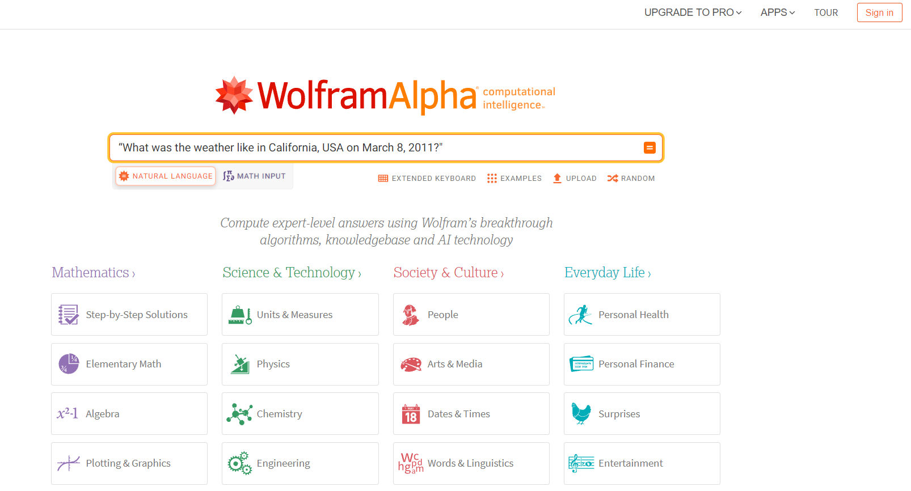
Извор: Wolfram Alpha Search

Извор: Wolfram Alpha Search Result
Комбиновањем свих добијених трагова и доказа може се проценити да ли постоји нешто што нема смисла. С друге стране, поједине технички процене се такође могу обавити преко софтвера за уређивање видео-записа (VLC Media Player, Avidemux Video Editor, Vegas Pro, итд.) када постоји нешто што нема смисла у вези с видео-записима (Browne, n.d., стр. 52).
Дипфејк (енг. Deepfake)
Дипфејкови су нови облици аудио-визуелне манипулације који омогућавају креирање реалистичних симулација лица, гласа или радњи особе (Gregory, 2020). Другим речима, укључивање технологија вештачке интелигенције у манипулације сликама и видео-записима назива се дипфејк. Дипфејк је у основи заснован на техници машинског учења која се зове Generative Adversarial Network (GAN). GAN тренира самог себе користећи скуп алгоритама за препознавање слике. На овај начин постаје способан да производи лажне слике учењем стварних карактеристика (Metz, 2017; Schwartz, 2018; Gregory, 2020).
Дипфејк има потенцијал да изазове озбиљну штету људима јер може да створи привид као да су урадили нешто што заиста нису рекли или урадили. На пример, може да користи лице особе за креирање сексуалних слика и видео-записа без пристанка. Осим тога, забрињава и могућност да се дипфејк користи за дезинформисање (Gregory, 2020).
Ево детаља на које треба посебно обратити пажњу када се проверава да ли се ради о дипфејку или не (Gregory, 2020):
- Уочљиви поремећаји чела/линије косе или стални покрети лица
- Недостатак детаља код зуба
- Изузетно глатка кожа
- Одсуство трептања
- Тренутни покрети, гестови и мимике се не примећују код говорника
- Недоследности када особа окреће или помера главу
Иако није увек лако открити дипфејк, може се уочити да ли је то дипфејк коришћењем одређених назнака и метода визуелне/видео верификације (сличност, обрнута претрага слика) (види делове “Верификација слике” и “Верификација видео-записа”) (Gregory, 2020; Marconi & Daldrup, 2018).
Пример: Видео не приказује реакцију Доналда Трампа када неко узвикује “Алаху акбар”
Године 2018. у видео снимку који је подељен на друштвеним мрежама тврдило се да је Доналд Трамп реаговао са страхом када је неко из гомиле узвикнуо “Алаху акбар” током његовог говора.
Да бисте верификовали видео, разбијање видео-записа на кључне кадрове и покретање Гугл обрнуте претраге слика су први кораци. Претрага нас доводи до неколико верзија видео-записа које су објавиле различите новинске куће 2016. године. Речи “Алаху акбар” се не чују на овим аутентичним снимцима. Према Вашингтон Посту, видео приказује реакцију Доналда Трампа на демонстранта који је скочио на бину током његовог митинга у Дејтону у Охају 12. марта 2016. (Teyit, 2018, August 6).
Верификација локације
Још један елемент који се може истражити у процесу верификације је информација о локацији садржаја. Пре свега, треба проверити да ли садржај који се испитује укључује информације о локацији. Платформе као што су Фликр, Пикаса, Инстаграм, Твитер нуде својим корисницима опцију да додају локацију. Информације о локацији се могу потврдити упоређивањем локације садржаја са постојећим сателитским фотографијама и фотографијама које садрже аутоматске информације о локацији (Silverman & Tsubaki, n.d., стр. 101). За ово се могу користити, Google Maps, Google Street View, Yandex Maps, Bing Maps, Google Earth, Wikimapia, Geofeedia и сличне платформе. Приликом поређења, могу се проверити следеће карактеристике ради верификације (Silverman & Tsubaki, n.d., стр. 101):
- Детаљи о улици (као што су знаци/натписи на зградама, улични знакови, знакови правца, билборди)
- Пејзажи (као што су планински ланци, дрвореди, литице, реке)
- Зграде и знаменитости (као што су цркве, минарети, стадиони, мостови)
- Временски услови (као што је дневна светлост или сенка да би се одредило приближно време)
- Регистарске таблице
- Заставе
- Одећа
- Говорни језик (нарочито у видео снимцима, акценти и дијалекти се могу проверити ради компатибилности са географском локацијом)
Уколико се страни језик користи у детаљима на улици као што су знаци/написи на зградама, улични знакови, знакови обавештења, билборди, Гугл преводилац и слични алати за превођење могу се користити за њихово превођење (Silverman & Tsubaki, n.d., стр. 101).
Фотографије из Гугл приказа улице (Google Street View) или Гугл мапа могу се користити за поређење детаља из садржаја са фотографијама са аутоматским информацијама о локацији (Higgins, 2015; Silverman & Tsubaki, n.d., стр. 101).
Пример: Рецимо да у новинском извештају на који наиђемо постоји слика или видео који се наводно односи на догађај који се догодио на тргу Ћелимонтана (Piazza Celimontana) у близини Колосеума у Италији. Када желимо да проверимо информације о локацији у вестима, можемо да користимо Гугл приказа улице.
Прво, потражимо појам “Piazza Celimontana” на Гугл мапама:

Извор: Претрага Гугл мапа за локацију “Piazza Celimontana, Roma, Italy”

Извор: Претрага Гугл мапа за локацију “Piazza Celimontana, Roma, Italy”
На приказу карте се види да је Трг Ћелимонтана близу Колосеума. Зумирањем приказа могу се прегледати детаљи о улици (као што су познате зграде, заставе).

Извор: Гугл приказ улице за локацију “Piazza Celimontana, Roma, Italy”

Извор: Гугл приказ улице за локацију “Piazza Celimontana, Roma, Italy”
Алат Гугл Земља (Google Earth) такође пружа сателитске снимке снимљене у прошлости. Због тога, приказ терена апликације Гугл Земља може да се користити и за старе фотографије и видео-записе (Silverman & Tsubaki, n.d., стр. 101).

Извор: Претрага Гугл Земља апликације за локацију “Piazza Celimontana, Roma, Italy”

Извор: Приказ Гугл Земље за локацију “Piazza Celimontana, Roma, Italy”
Иако друштвене мреже као што су Твитер, Фејсбук и Инстаграм дају корисницима могућност да додају локације, често извлаче метаподатке (осим Фликра). Уместо тога, платформе као што је Geofeedia могу да се користе за одређивање ГПС података са мобилног уређаја који је отпремио садржај (Silverman & Tsubaki, n.d., стр. 98-99).
Поред коришћења ових техника и алата, може се проверити и да ли званичне новинске организације објављују сличне слике, или постоје слике које су други са те локације поставили на друштвене мреже. Тако је можда могуће сагледати срж (суштину) догађаја из различитих углова и обезбедити поузданост слика (Barot, n.d., стр. 40).
Верификација налога на друштвеним мрежама
Постоји низ приступа и алата који се могу користити за истраживање налога на друштвеним мрежама.
Корисничка имена и идентитет
Када истражујете да ли је кориснички налог стваран, прво проверите да ли има плаву квачицу тј. беџ верификације. Ако постоји беџ поред назива налога, то значи да је налог одобрен од стране релевантне платформе (као што су Фејсбук, Твитер, Инстаграм) (Silverman & Tsubaki, n.d., стр. 99-100). Када мишем пређете преко плаве квачице, појавиће се опис да се ради о верификованом налогу. Ако се такво објашњење не појави, плава квачица је можда додата у Фотошопу (Wardle, n.d., стр. 28). Платформе друштвених мрежа имају одређене критеријуме за одобравање налога на платформама, као што су оригиналност, јединственост, делотворност и запаженост (Instagram help center, 2021; Twitter help center, 2021). У зависности од платформе где желите да ваш налог буде одобрен, можете се пријавити испитивањем критеријума које је одредила релевантна платформа.
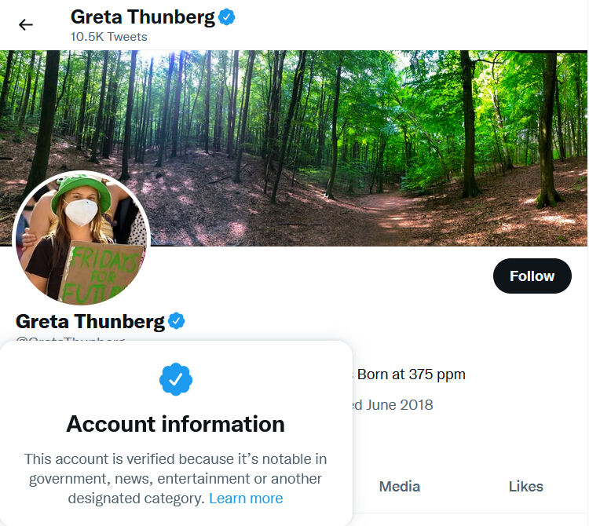
Извор: Пример верификованог налога
Док поједини људи користе различито корисничко име на свакој платформи, други корисници можда преферирају исто корисничко име на различитим платформама. Из тог разлога, потребно је испитати тражено корисничко име на неколико различитих сајтова (Zadrozny, 2020). Следећи алати и платформе (Google, Namechk, Namecheckr, Spokeo, Webmii, LinkedIn, haveibeenpwned.com, Dehashed.com итд.) се могу користити за претрагу корисничких имена и идентитета.
Пример: Рецимо да истражујемо да ли налог на друштвеним мрежама на који смо наишли припада Бритни Спирс и да ли Бритни Спирс има друге налоге.
Гугл: Корисничка имена или лични идентификациони подаци могу се прво претражити на Гуглу. Ако постоје било какве информације о кориснику које је Гугл индексирао, ове информације могу помоћи у праћењу тог корисника.

Извор: Google Search

Namechk или Namecheckr: Могу се користити да се истражи да ли корисничко име или имејл постоји на различитим платформама (Zadrozny, 2020).
Пример: Хајде да извршимо претрагу на платформама Namechk и Namecheckr за корисничко име “britneyspears” које Бритни Спирс користи на свом Инстаграм налогу:

Извор: Претрага на платформи Namechk за корисничко име “britneyspears”

Извор: Резултати претраге за корисничко име “britneyspears” на платформи Namechk
Платформе које користе корисничко име “britneyspears” се приказују као “регистроване” (црвена боја) или “недоступне” у резултатима претраге. Тако је могуће проверити друге повезане налоге на друштвеним мрежама особе коју тражимо.

Извор: Резултати претраге за корисничко име “britneyspears” на платформи Namecheckr
Spokeo: Можете тражити особу по имену, имејлу, телефону или корисничком имену (Verification handbook, n.d.).
Пример: Хајде да претражимо платформу Spokeo за име Britney Spears:

Извор: Претрага платформе Spokeo

Као резултат претраге, могуће је доћи до информација као што су географски региони у којима живе људи по имену Бритни Спирс, њихове адресе, бројеви телефона, имејлови и имена неких других људи са којима су у контакту.

У зависности од потребних информација, можете да филтрирате своје претраге на Spokeo платформи (као што су старост, држава, итд) коришћењем опције напредне претраге.
Webmii: Можете претраживати веб линкове по имену особе (Verification handbook, n.d.).
Пример: Када на Webmii платформи извршимо претрагу са именом Britney Spears, могуће је видети линкове до платформи на којима је особа присутна на вебу.

Извор: Webmii - претрага по имену Britney Spears

LinkedIn: Можете добити представу о идентитету и причи неке особе гледајући њену радну историју и везе на Линкедину (Verification handbook, n.d.).
Пример: Хајде да извршимо претрагу на Линкедину да бисмо добили информације о идентитету Марије Ресе, једне од добитница Нобелове награде за мир 2021. годину, и да бисмо видели њене професионалне пословне везе:
Извор: LinkedIn
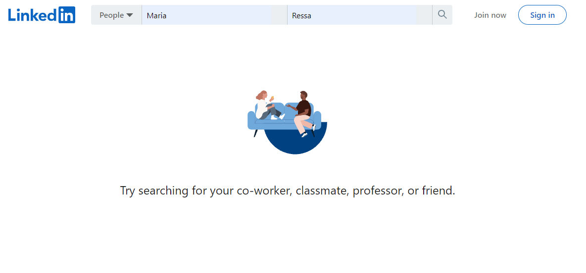
Резултати претраге показују да постоји више налога са истим именом. Међу овим налозима може се утврдити који налог садржи трагове о новинарки Марији Реси.

Када се кликне на налог на првом месту, види се да су подаци о новинарки Марији Реси, као што су држава, језик, догађаји, компатибилни са информацијама о особи.

Извор: Линкедин налог Марије Реса
Поред ових, haveibeenpwned.com и Dehashed.com истражују повреде безбедности података које укључују корисничке информације, а могу се користити за верификацију имејл адресе или броја телефона. Такође, могу се користити и платформе као што су Pipl и Skopenow које пружају плаћене услуге и које се примењују за претрагу људи који живе у Сједињеним Државама (Zadrozny, 2020).
Повезаност
Могуће је научити много о животу и склоностима особе гледајући с ким комуницира на мрежи. У ту сврху могу се потражити најстарији пратиоци и пријатељи налога (Zadrozny, 2020). Користећи алат под називом TweetBeaver, могуће је претраживати везе између великих налога и прегледати временску линију и свиђања мањих налога. Да бисте користили TweetBeaver, потребно је да имате Твитер налог и да се пријавите.
Пример: Хајде да погледамо корисничко име на Твитер налогу за које се сматра да припада Бритни Спирс. Можемо да проверимо следећи статус овог власника налога са Твитер налогом сестре Бритни Спирс, Џејми Лин Спирс помоћу алата TweetBeaver.

Извор: TweetBeaver
Из различитих понуђених опција алата TweetBeaver изабран је следећи статус два налога. Затим се у одговарајућа поља уписују називи налога које треба проверити и поставља се упит.

Извор: Провера статуса праћења на Твитеру Бритни Спирс и њене сестре помоћу TweetBeaver
Као резултат претраге, види се да се два налога међусобно прате.

Поред тога, Твитер напредна претрага може да се користи како би се дошло до првих твитова налога или да се испитају твитови послати у одређеном временском периоду. Могуће је извршити различите претраге коришћењем функција филтрирања (реч, година, итд.) у оквиру Твитер напредне претраге.

Извор: Твитер напредна претрага
Корисници понекад могу да избришу своје објаве на друштвеним мрежама (као што су твитови, објаве на Фејсбуку). Уколико су подељене објаве које садрже сумњив садржај снимљене на сајтовима који пружају архивске услуге као што су Wayback Machine, archive.today преко ових сајтова може се приступити избрисаним објавама.
Фотографије
Фотографије профила су још један елемент који помаже приликом истраживања налога на друштвеним мрежама и верификације идентитета власника налога. Различити трагови се могу добити обрнутом претрагом слика користећи фотографију профила. За детаљније информације погледајте одељак “Верификација слике”.
Истраживање веб-сајта
Веб-сајтове могу да користе људи који се баве медијском манипулацијом са циљем да генеришу приходе, прикупљају личне информације (имејлови и друго), стварају безбедан онлајн простор (Silverman, 2020a). Поред тога, садржај на веб-сајтовима може бити повезан са сумњивим садржајем који се дели на друштвеним медијима. Из тог разлога, можда ће бити потребно проверити текстуални, визуелни, видео и сличан садржај на веб-сајтовима.
Слична ситуација као што је брисање садржаја који се дели на платформама друштвених медија, дешава се и на веб-сајтовима. Брисање линка било ког садржаја (текст, слика, видео или све) на веб-сајту, резултира тиме да се том садржају више не може приступити. Ако су линкови ка веб-сајтовима или садржај са ових сајтова снимљени на сајтовима који пружају услуге архивирања као што су Wayback Machine, archive.today, избрисаном садржају се може приступити преко њих. Услуге архивирања не само да пружају приступ страницама/садржају који могу имати квалитет доказа, већ и спречавају директне везе ка сајтовима/налозима који шире лажне информације. Помоћу ових алата такође је могуће пратити промену веб-сајта током времена (Silverman, 2020a). Сајт Wayback Machine вам омогућава да пратите разлике упоређивањем различитих верзија одређене странице сачуване у различито време (Graham, 2021).

Извор: Архивиране странице веб локације “https://datajournalism.com/” na Wayback Machine
Први корак ка верификацији веб-сајта јесте да имате идеју о садржају веб-сајта (Silverman, 2020a).
-
Да бисте разумели о чему се ради на сајту, можете погледати одељак “О нама”, ко управља сајтом, сврху сајта и друга објашњења на сајту. Уколико нема ових објашњења, то се може сматрати сумњивим знаком о сајту. Ово оставља утисак да је сајт можда направљен на брзину или да се скривају информације о власништву и статусу обајвљивања. Поред тога, у одељку “О нама” можете проверити да ли се име било које особе, правног лица или компаније помиње у другим деловима сајта. Ако се помињу имена, може се проверити да ли су ове информације доследне на различитим страницама.
-
Ако се чланци објављују на веб-сајту, треба обратити пажњу на податке о аутору и да ли садрже линкове. Ако постоје линкови на које се може кликнути, може се проверити да ли воде до биографије аутора, налога друштвених мрежа или других повезаних страница са информацијама о аутору.
-
Може се проверити да ли постоји линк до налога друштвених мрежа повезаних са сајтом. Ови линкови се обично налазе у облику икона платформи друштвених мрежа као што су Фејсбук, Твитер, Инстаграм. Када пређете мишем преко ове иконе, у доњем левом углу прегледача можете видети на коју УРЛ адресу преусмерава. Пошто идентитети налога друштвених медија који припадају на брзину креираним веб локацијама нису у потпуности попуњени, линк се објављује као facebook.com/ без корисничког имена.
-
Да би се проверила оригиналност садржаја (текстуалног, визуелног и слично) који се приказује на сајту, може се испитати да ли је садржај копиран са другог места, да ли се на сајту деле лажне/обмањујуће информације, или се настоји да се истакне одређена агенда/тема.
Још један податак који се може проверити о веб-сајту су основне информације о регистрацији сајта, као што су назив домена и датум његовог креирања. У појединим случајевима могуће је добити информације о особи или институцијама које су платиле регистрацију назива домена. За ово се могу користити платформе као што су who.is, whois.net или ICANN LookUp. Алат под називом DomainBigData се такође може користити за претрагу назива домена. Ако ваша претрага назива домена приказује информације регистранта као “Registration confidential”, “WhoisGuard Protected” или “Perfect Privacy LLC”, то значи да је приватност назива домена заштићена. Са друге стране видљиви су следећи подаци: датум последње регистрације назива домена, када ће истећи, ИП адреса сервера на коме се сајт хостује (Silverman, 2020a).
Пример: Погледајмо информације о називу домена сајта “The Information”.

Извор: Претрага назива сајта “The Information” на веб-сајту who.is
Резултат претраге за страницу приказује фразу “Perfect Privacy LLC” у одељку са подацима о регистранту. У овом случају, заштићена је поверљивост имена домена.
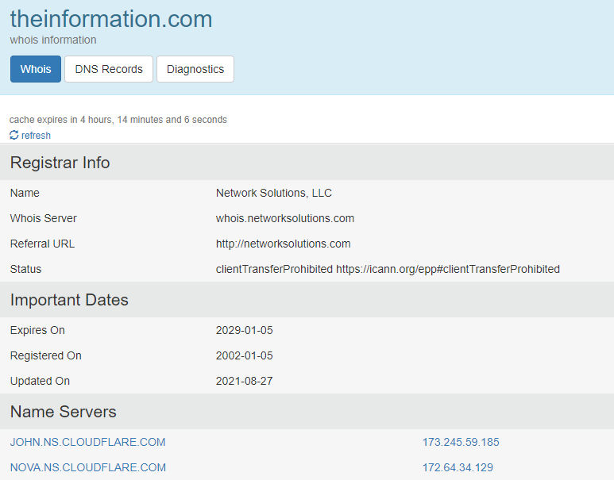

Извор: Резултати претраге за сајт “The Information” на веб-сајту who.is
Поред садржаја и извора, детаљније се може испитати и изворни код веб-сајта приликом процеса верификације веб-сајта (Silverman, 2020a).
Пример: Не, Путин није забранио продају алкохола у Русији током 11 дана
Новинск сајтови су тврдили да ће у Русији бити забрањена продаја алкохола током једанаестодневног државног празника током маја 2021. године.
Анализом је утврђено да уредба коју су објавиле власти не садржи никакву забрану алкохола, нити се таква забрана помиње у другим владиним саопштењима.
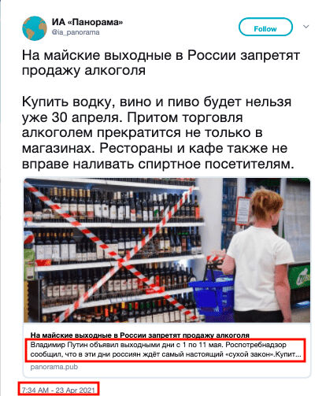
Претрага по кључним речима води нас до налога под називом “Panorama” као извора тврдње. У одељку описа налога, који на Твитеру има више од 50 хиљада пратилаца, наведено је да прави пародијске емисије. Ово је пример да се, супротно популарном веровању, пародијски садржаји често могу заменити чињеницама, па чак и наћи место за себе у вестима (Teyit, 2021, April 30).
Ботови и тролови
Опште информације о ботовима и троловима обрађене су у Модулу 4. Овај модул укључује информације о томе како да препознате ботове и тролове.
Шта је бот?
“Бот је софтверска апликација која може аутоматски да извршава задатке које су му доделили људи.” (Wild & Godart, 2020). Ботови који се често помињу у дискусијама у јавним просторима и који су активни на друштвеним мрежама као што су Фејсбук, Твитер, Линкедин су друштвени ботови. Могу се користити на овим друштвеним мрежама за ширење одређених идеолошких порука, а често и за стварање привида да одређена тема, особа, садржај или хештег има значајан број присталица. Ботови друштвених медија се генерално сврставају у три главне категорије (Wild and Godart, 2020):
- Планирани бот
- Бот посматрач
- Бот за појачавање
У контексту дезинформација, често наилазимо на ботове за појачавање. Сврха ботова за појачавање је да обликују јавно мњење на интернету. Такође се могу користити да представе да појединци и организације имају више следбеника него што заправо имају. Мрежа ботова за појачавање такође се може користити да би се утицало на ширење хештегова, за ширење линка или визуелног садржаја, слање нежељене поште, дискредиовање одређене особе на мрежи или да се створи слика да та особа изгледа контроверзно или да је жестоко критикована (Wild and Godart, 2020).
Поред ботова, могуће је наићи на налоге друштвених мрежа које показују мешавину природних и вештачких активности, којима понекад управља алгоритам, а понекад стварне особе. Такви налози се називају киборзима (Wild and Godart, 2020).
Како препознати ботове
Док је куповина и креирање ботова релативно лако, стварање и одржавање софистициране мреже робота која опонаша људско понашање је теже (Wild and Godart, 2020). Развијени су одређени алати који помажу у одређивању да ли је налог бот, међутим, треба имати на уму да резултат добијен помоћу алата не представља јасан резултат и не би требало да буде једина тачка на којој се заснивају вести или закључци. Ови алати могу бити добра полазна тачка, али не постоји универзални критеријум за идентификацију ботова са апсолутном тачношћу. Такође још увек не постоји јасан консензус о томе како се нешто класификује као бот (Wild and Godart, 2020).
Botometer: Ботометар је покренут као заједнички пројекат Опсерваторије за друштвене мреже Универзитета Индијана (Indiana University Observatory on Social Media) и Network Science Institute. “Ботометар (раније познат под називом BotOrNot) проверава активност Твитер налога и даје му оцену. Виши резултати значе више активности налик ботовима.” (Botometer, n.d.).
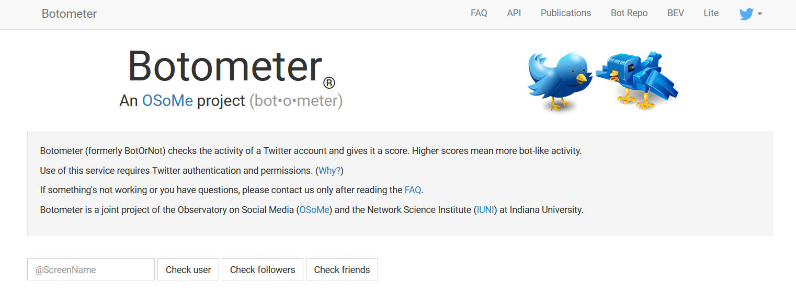
Извор: Botometer
Bot Sentinel: Пружа јавну базу података Твитер налога у САД који испољавају сумњиво понашање. Ова база података, она има за циљ да на једном месту објдини налоге који стално крше Твитер правила и идентификује их као “проблематичне” (Bot Sentinel, 2021; Wild and Godart, 2020).

Извор: Bot Sentinel
На веб страници Bot Sentinel могу се видети налози који су недавно додати за процену.

Извор: Недавно додати налози на сајту Bot Sentinel и њихови подаци
Поред коришћења ових алата у детекцији ботова, важно је пратити и вештачку активност на друштвеним мрежама. Да бисте протумачили типичне сигнале са сумњивих налога који показују аутоматско понашање на Твитеру или другим друштвеним мрежама, могу се испитати следеће ставке (Wild and Godart, 2020):
- Лажна слика профила: Да би се открили налози ботова и вештачке активности, могу се узети у обзир следећи савети у вези са фотографијом профила(Wild and Godart, 2020):
- Недостатак било какве профилне слике
- Коришћење украдене фотографије на профилу или
- Коришћење ликова из цртаних филмова или животиња као профилних слика
- Аутоматски креирана корисничка имена: Свако корисничко име на Твитеру је јединствено. Због тога, ботови обично користе следеће критеријуме да генеришу корисничка имена која још нису коришћена (Wild and Godart, 2020):
- Активност налога не одговара његовој дужини постојања: Можда ћете сумњати у налог ако наиђете на следеће ситуације. У овом случају, потребно је пажљивије испитати активности налога (Wild and Godart, 2020):
- Ако новоотворени налог има велики број пратилаца или
- Ако је новоотворени налог много твитовао за кратко време или
- Стари налог је веома активан, али има мало пратилаца
- Сумњиви обрасци твитова: Људи могу имати неке преференције у погледу дана и времена када твитују, међутим, мало је вероватно да ће особа доследно објављивати у одређене дане, а ћутати другим данима (Wild and Godart, 2020).
|
“Корисничко име након чега следи четвороцифрени број” |
“Дванаест насумичних знакова у низу који могу бити комбинација (а-z, А-Z и 0-9)” |
“Било које име праћено насумичним осмоцифреним бројем, што указује да је коришћено подразумевано корисничко име које је генерисао Твитер.” |
|
hero_2345 hero_3476 hero_9812 |
fH23pGr50LaX 7At35kd89QwS Xr16xHW4n6DK |
George89567438 Mary91827364 Peter25384128 |
Шта је трол?
“Трол је особа која намерно иницира сукобе на мрежи или вређа друге кориснике да би одвратила пажњу и изазвала поделе објављивањем запаљивих постова или постова ван теме у онлајн заједници или на друштвеној мрежи. Њихов циљ је да испровоцирају друге на емоционалну реакцију и скрену дискусију са теме.” (DFRLab, 2018).
Како препознати тролове
Тролови често приказују профил који подржава и брани идеолошки усклађене лажне вести, свађају се са људима, постављају увредљиве коментаре другим корисницима и јавним личностима, не воле одређене идеје и застрашују оне који те идеје објављују (The Center for Information Technology and Society, n.d.).
Кораци за откривање налога ботова такође се могу применити на налоге за које се сумња да су тролови. У овом контексту, информације као што су коришћена фотографија профила, број пратилаца, датум отварања налога, обрасци дељења могу дати представу о томе да ли је налог трол.
Пример: Колико далеко могу да иду ботови и тролови?
Све је већи тренд употребе робота и тролова за спамовање и блаћење активиста, за гашење хештегова који критикују ауторитет и за ширење дезинформација.
Ботови су коришћени за спамовање хештегова у Мексику.
Као и у свакој земљи, хештегови су коришћени на Твитеру како би скренули пажњу на важна политичка питања у Мексику. Хаштагови попут #YaMeCanse, #SobrinaEBN и #Acapulco брзо су добили замах и постали “тренд” на Твитеру.

Твитови који имају за циљ да спамују хештег #SobrinaEBN, Извор: Sánchez, 2015, July 22)
Недуго након што су хештегови уврштени на листу трендова, хиљаде корисника почело је да поставља насумични садржај. Истраживачи су рекли да је тешко рећи ко или шта стоји иза напада, али су били преплављени учесницима ботова да шаљу хештегове у нежељену пошту. Циљ је био да се активирају Твитерове мере против спамовања и избаци хештег са листе актуелних трендова. Анализа мреже показује јасну разлику између. правих и лажних хештегова (Trewinnard, 2016, February 11).
Да ли је то активност бота или не?
Након шумских пожара 2021. године, преко 270 пожара захватило је 53 провинције, а 9 људи је погинуло у Турској. Хештег #HelpTurkey постао је виралан услед недостатка акције владе. Званичници су рекли да је то вештачки започето како би Турска изгледала “слабо”. Међутим, анализа првих 500 хиљада твитова показује да је ширење било органско. Постоји на десетине налога са више пратилаца и верификованих налога због којих је кампања постала масовна. Случајеви попут ових показују да ботови и тролови могу да изазову информацијски поремећај не само својим активностима већ чак и идејом да постоје (Teyit, 2021, August 4).
Индијски ресторан се нашао на корак до затварања због тролова.
Шрина Бегум (Shrina Begum), власница индијског ресторана, није могла да разуме разлог телефонских позива у којима су је оптуживали да продаје људско месо и почела је да прати гласине. Пронашла је веб страницу под називом Channel23news.com која је објавила причу у којој се тврди да је ресторан Karri Twist ухваћен у продаји људског меса и да је његов власник ухапшен.
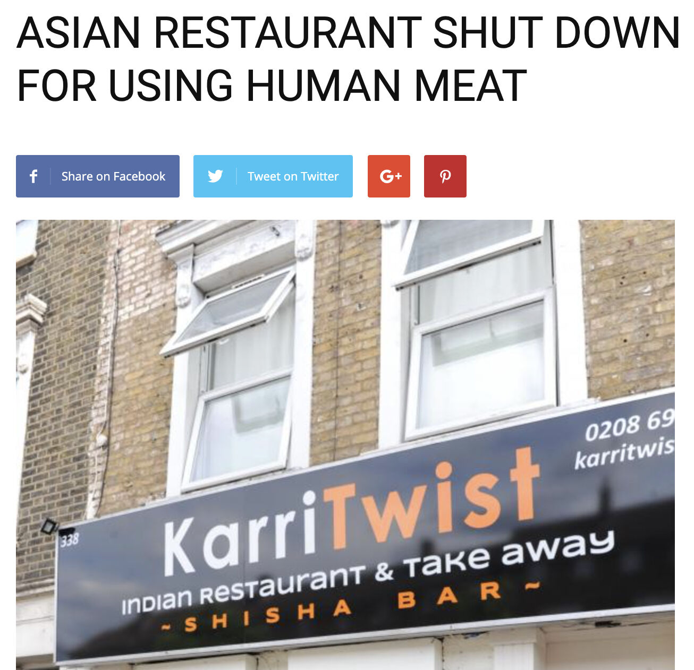
(Лажна вест о ресторану на Channel23News.com)
Након што је прича постала вирална, онлајн истрага је открила да је власник веб-сајта Channel23News.com и најмање 18 других сличних сајтова за шале наведен у евиденцији регистованих домена као “Кори Шерер (Korry Scherer)”. Ове веб странице позивају људе да измишљају лажне вести и деле их на Фејсбуку и генерисале су више од 13 милиона интеракција на друштвеној мрежи током 12 месеци (Silverman & Spary, 2017, May 29).
Студије случаја
Студија случаја 1: Дрвеће је ишчупано из корена, али из другог разлога
Како се сукоб између Индије и Пакистана наставља, различите тврдње нашироко круже друштвеним медијима, изазивајући гнев и повећавајући тензије у обе земље. Дана, 8. августа 2021. видео-запис је постао виралан на платформама друштвених медија са натписима у којима се лажно тврди да је у Пакистану локално становништво почупало саднице из корена, јер је садња дрвећа у супротности са исламским веровањима. Тврдња је почела да се шири још брже након што су политичари и јавне личности почели да је деле преко својих верификованих Твитер налога
Сурендра Пониа (Surendra Punia), члан Бхаратиа Јанате, једне од две главне политичке странке у Индији, и бивши војни мајор је твитовао видео-запис са текстом у којем се тврди да је, Имран Кхан копирао ‘Акцију сађења дрвећа’ премијера Шри Модија у Пакистану, али су његови следбеници све дрвеће ишчупали из корена, јер осећају да је “сађење дрвећа у супротности са исламским веровањима”.

Убрзо након тога, видео-запис је почео да се шири турским друштвеним мрежама са истом тврдњом. Различите новинске куће су поделиле ту тврдњу без провере чињеница, али уз исламофобичне изјаве.
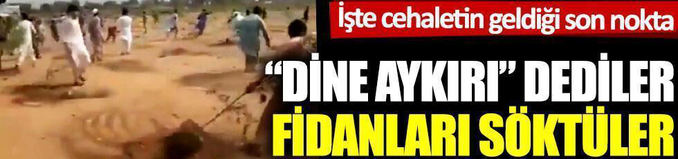
(Извор: Caption, 2021, August 11)
Прво што треба да урадите јесте да сазнате где је и када снимљен снимак. Први корак је покретање обрнуте претраге слике кључног кадра из виралног видео-записа. Ова претрага је открила извештај пакистанског веб-сајта Кхабарнама, који је пренео снимке екрана из истог видео-записа у којем се овај догађај назива инцидентом који је пријављен у области Бара Манди у Хајберу.
Према вестима, инцидент се догодио након што је пакистански премијер покренуо највећу акцију сађења дрвећа у земљи. Власништво над земљиштем где је снимљен вирални видео је било спорно и није добијена дозвола од власника за сађење на том земљишту. Детаљи и изјаве које су дале владини званичници након инцидента такође се могу пронаћи помоћу претраге по кључним речима на различитим веб-сајтовима као што су Pakistan Today, Dawn, The News, и Samaa. Истраживања других платформи за проверу чињеница као што је Boomlive, платформа за проверу чињеница са седиштем у Индији, такође се могу пронаћи помоћу претраге по кључним речима.
Укратко, иако је видео аутентичан, лажан је натпис који тврди да видео-запис приказује исламске екстремисте како чупају дрвеће јер је сађење дрвећа супротно исламским веровањима. Улагање напора да се разуме контекст једнако је важно као и познавање одговарајућих алата за проверу чињеница. Једноставна претрага по кључним речима могла би да буде метод који може да спречи ширење мисинформација (Teyit, 2020, August 12).
Студија случаја 2: Сензационалистичка тврдња поводом “Ујгурске девојке на продају”
На друштвеним мрежама објављен је снимак у којем се тврди да Комунистичка партија Кине продаје на пијаци ујгурску девојчицу чија је породица затворена. Иста тврдња је такође подељена на различитим језицима.

(Натпис: Ужасан скандал. Чланови Кинеске комунистичке партије продају децу из Источног Туркистана чији су родитељи затворени у логорима. Продавац тражи 200.000 јуана - Купац: То је је много. - Продавац: Ако вам се свиђа, снизићу цену, колико ви нудите? - Купац: 20 јуана)
Ујгури су највећа мањинска етничка група у северозападној кинеској провинцији Синђан. Кина је оптужена да је починила злочине против човечности над ујгурским становништвом. Док Кина негира све оптужбе, све већи број сличних тврдњи наставља да се шири по земљама и језицима.
Обрнута претрага слике показује да се тврдња шири и на другим језицима као што су арапски и јапански.
Погледајте коментаре.
На снимку се чује разговор на кинеском између два мушка гласа. Такође, одређени звуци дају наговештај да je снимак настао на отвореном. Тврдња је била да разговор представља погодбу о цени девојке. У једном од коментара на објаву на јапанском језику налази се снимак на којем се чује исти разговор, али је слика другачија.
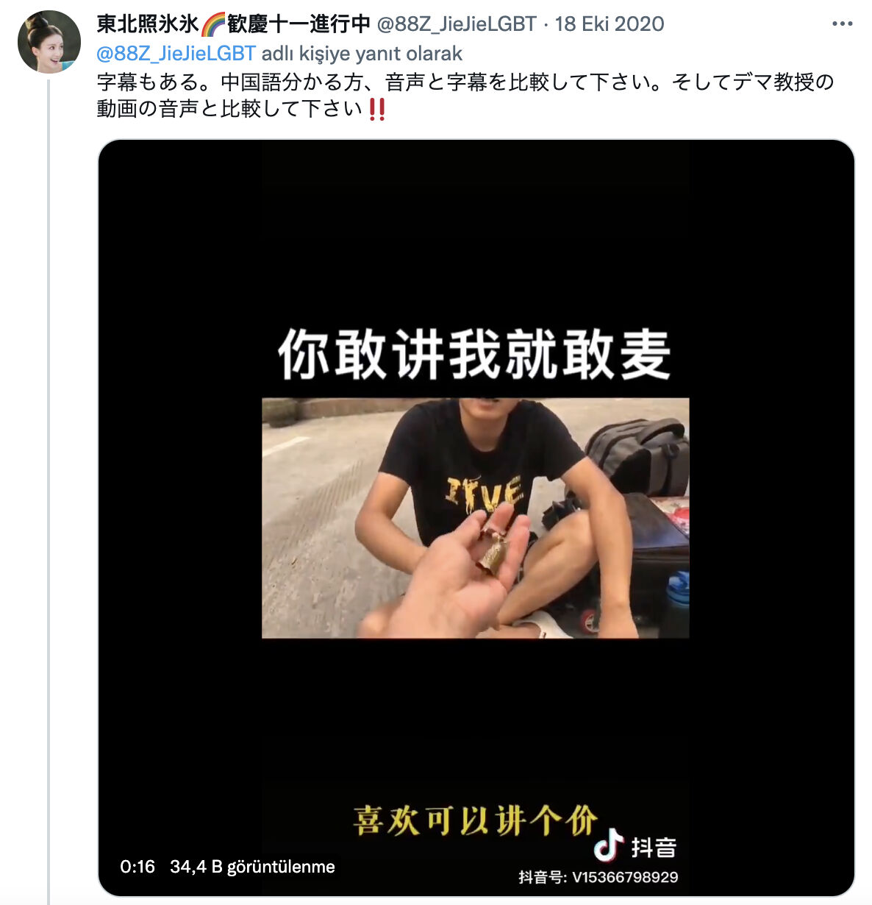
ТикТок лого који се види у овом видеo-запису и бројеви испод показују да је видео дељен на Доуjин, кинеској верзији апликације.
Видео је поделио корисник са шифром “v15366798929” на Доуjину. Текст се може превести помоћу Јандекс претраге слика, Текст. "你敢讲我就敢麦" са слике гласи “Ако се усуђујеш да говориш, ја ћу се усудити да не једем пшеницу”. Осим тога, можемо разумети да је разговор био погодба, тако што ћемо превести титлове из видео-записа помоћу алата Google Lens. У овом тренутку, алат за уређивање звука Audacity може помоћи да се упореде ова два аудио-записа и да се види да су слични. На Твитеру се могу наћи различитиt видео-записи са истим звуком.

(Област означена црвеном бојом су звучни таласи оригиналног видео-записа, област означена зеленом бојом је звук из спорног видео-записа)
Детаљне информације о девојци са видео-записа се могу пронаћи и у коментарима у оквиру објаве. Наводи се да је девојка обучена да буде модел у провинцији Гуангдонг, док се у другом коментару може видети профил оца девојчице са њеним различитим фотографијама.
Наводни видео такође има трагове који сугеришу да је девојчица у школи: нпр. друго дете у мајици са истим логотипом и трофеји на полицама за књиге.
Док истражујете тврдње у вези са Кином, важно је да другачије размишљате и имате на уму алате који могу помоћи у превазилажењу културних и језичких баријера (Teyit, 2020, October 22).
Вежбања
Вежбање 1

Тврдња: Фотографија која приказује удар грома у облику срца у Француској
Линк ка садржају: https://archive.is/kQKTe
Вежбање 1 - Белешке о верификацији:
За проверу чињеница може се урадити следеће:
- Обрнута претрага сликe приказује постове на Reddit и 9gag posts. Знак “jeanyvesvilla.com” се може видети на десној страни фотографије која се дели на овим веб-сајтовима
- Адреса тренутно није доступна. Међутим, Фејсбук страница фотографа је и даље доступна када се тражи име Jean Yves Villa.
- Међу другим подељеним фотографијама муња, могуће је доћи до фотографије из ове тврдње.
- Према натпису, слику је снимио Жан-Ив Вила изнад града Сорг у близини Авињона 31. јула 2016. године.
На основу провере чињеница коју сте урадили, код питања бр. 2 требало би да одговорите “тачно је”
Вежбање 2

Тврдња: Фотографија из Совјетског Савеза, на којој се видe новорођене бебе које спавају напољу, како би се ојачао њихов имуни систем
Линк ка садржају: https://archive.is/IHuly
Вежбање 2 - Белешке о верификацији:
За проверу чињеница може се урадити следеће:
- Резултати обрнуте претраге слике приказују различите постове на ову тему. На поједиим веб-сајтовима може се видети објашњења попут “Деца спавају на отвореном после ручка у породилишту у Москви 1958. године.”
(На неким објавама се при дну фотографије види објашњење исписано ћирилицом. Белешка се може превести помоћу Јандекс претраге слика, која претвара текстове на сликама у дигитални текст) - Резултати претраге кључних речи воде нас до веб странице под називом Russia Beyond која дели приче везане за културу, путовања, образовање, језик и још много тога у Русији. Чланак под називом “Зашто су деца спавала на хладноћи у совјетским вртићима?” објашњава причу о фотографијама и културним навикама иза њих.
(Заслуге за фотографију су наведене овако: “Dmitry Baltermants/MAMM/MDF”. Димитри Балтермантс је био совјетски фоторепортер. “MAMM/MDF” је скраћеница за Музеј мултимедијалне уметности у Москви. Извор фотографије се може потврдити поново контактирањем музеја).
На основу провере чињеница коју сте урадили, код питања бр. 2 требало би да одговорите “тачно је”
Вежбање 3

Тврдња: На слици се види скуп против ношења маски у Лондону
Вежбање 3 - Белешке о верификацији:
За проверу чињеница може се урадити следеће:
- Детаљи за потврду да ли је фотографија из Лондона: (а) Текст “..latz” на знаку у левом углу фотографије може бити наговештај за локацију. (б) Постоје речи за које можемо сумњати да нису на енглеском, иако оно што је написано на другим транспарентима које држе људи није у потпуности разумљиво.
- Обрнута претрага слике показује веб-сајт покрета којој припадају знаци на бочним странама банера. Оригиналној фотографији из упита се може приступити на сајту. Из знака за метро “Alexanderplatz” на оригиналној фотографији закључује се да је фотографија са скупа у Берлину. Оригинални натпис на транспаренту гласи: “#unteilbar - Solidarität statt ausgrenzung” што значи “#недељиво - Солидарност уместо искључења”.
- Локација на којој је фотографија снимљена може се пронаћи помоћу Гугл мапа, испитивањем погледа на улицу са метро излазима именованим “Alexanderplatz”.
На основу провере чињеница коју сте урадили, код питања бр. 2 требало би да одговорите “нетачно је”. Фотографија је снимљена на демонстрацијама 13. октобра 2018. у Берлину.
Квиз
Референце
Barot, T. (n.d.). Verifying images. In C. Silverman (Ed.), Verification handbook: An ultimate guideline on digital age sourcing for emergency coverage (стр. 35-41).
Bot Sentinel. (2021). About.
Browne, M. (n.d.). Verification fundamentals: Rules to live by. Verifying video. In C. Silverman (Ed.), Verification handbook: An ultimate guideline on digital age sourcing for emergency coverage (стр. 47-53).
Buttry, S. (n.d.). In C. Silverman (Ed.), Verification handbook: An ultimate guideline on digital age sourcing for emergency coverage (стр. 15-18).
DFRLab. (2018, October 9). #TrollTracker: Bots, botnets, and trolls. In Medium.
Graham, M. (2021, May 5). Tips for using the Internet Archive’s Wayback Machine in your next investigation. Global Investigative Journalism Network.
Gregory, S. (2020). How to think about deepfakes and emerging manipulation technologies. C. Silverman (Ed.), Verification handbook: For disinformation and media manipulation. European Journalism Centre.
Higgins, E. (2015, July 25). Searching the Earth: Essential geolocation tools for verification. In Bellingcat.
IFLA. (2017). How to spot fake news.
Instagram help center. (2021). Verified badges.
Kiely, E. & Robertson, L. (2016). How to spot fake news. In FactCheck.org.
Lewandowsky, S., Cook, J., Ecker, U. K. H., Albarracín, D., Amazeen, M. A., Kendeou, P. … Zaragoza, M. S. (2020). The Debunking Handbook 2020. doi:10.17910/b7.1182
Lytvynenko, J. (2020). Monitoring for fakes and information operations during breaking news. C. Silverman (Ed.), Verification handbook: For disinformation and media manipulation. European Journalism Centre.
Mantzarlis, A. (2018). Module 5: Fact-checking 101. In C. Ireton and J. Posetti (Eds.), Journalism, fake news & disinformation: Handbook for journalism education and training (стр. 81-95). France: UNESCO.
Mantzarlis, A. (2015, October 21). Will verification kill fact-checking?. In Poynter.
Marconi, F., & Daldrup, T. (2018, November, 15). How The Wall Street Journal is preparing its journalists to detect deepfakes. In NiemanLab.
Metz, C. (2017, November 4). Google's dueling neural networks ppar to get smarter, no humans required. In Wired.
News Literacy Project. (2021). Don’t get fooled: 7 simple steps.
Sánchez, A. I. (2015, July 22). Atacan bots hashtag #SobrinaEPN [Video ]. YouTube.
Schwartz, O. (2018, November 12). You thought fake news was bad? Deep fakes are where truth goes to die. In The Guardian.
Silverman, C. (2020a). Investigating websites. C. Silverman (Ed.), Verification handbook: For disinformation and media manipulation. European Journalism Centre.
Silverman, C. (2020b). Verification and fact checking. C. Silverman (Ed.), Verification handbook: For disinformation and media manipulation. European Journalism Centre.
Silverman, C. & Spray, S. (2017, May 29). Trolls are targeting Indian restaurants with a create-your-own fake news site. Buzzfeed.
Silverman, C. & Tsubaki, R. (n.d.). Creating a verification process and checklist(s). In C. Silverman (Ed.), Verification handbook: An ultimate guideline on digital age sourcing for emergency coverage (p. 97-103).
Teyit. (2021, January 7). Fotoğrafın 6 Ocak 2021 Washington DC protestolarından olduğu iddiası [Is this photo taken at a pro-Trump rally in Washington D.C. after the elections?]. Teyit.
Teyit. (2020, June 1). Fotoğrafın Dimetoka’daki camiye Yunanistan bayrağı asıldığını gösterdiği iddiası [The claim that the photo shows the Greek flag hanging on the mosque in Dimetoka]. Teyit.
Teyit. (2018, August 6). Videonun Donald Trump’ın 'Allahuekber' sesini duyunca verdiği tepkiyi gösterdiği iddiası [Video does not show the reaction of Donald Trump when someone shouts “Allahu Akbar”]. Teyit.
Teyit. (2021, April 30). Putin’in Rusya’da içki satışını 11 gün yasakladığı iddiası [No, Putin did not ban alcohol sales in Russia for 11 days]. Teyit.
Teyit. (2021, August 4). Vaka çalışması: #HelpTurkey etiketinin hikayesi [Case study: The story of the #HelpTurkey hashtag]. Teyit.
Teyit. (2020, August 12). Videonun Pakistan'da 'İslam'da haramdır' diye ağaç söküldüğünü gösterdiği iddiası [The claim that the video shows the removal of trees in Pakistan saying 'it is haram in Islam']. Teyit.
Teyit. (2020, October 22). Videonun Doğu Türkistanlı bir çocuğun pazarda satıldığını gösterdiği iddiası [The claim that the video shows a child from East Turkistan being sold in the market]. Teyit.
The Center for Information Technology and Society. (n.d.). How is fake news spread? Bots, people like you, trolls, and microtargeting.
Toler, A. (2019, December 26). Guide to using reverse image search for investigations. In Bellingcat.
Trewinnard, T. (2016, February 11). Sockpuppets and spambots: How states manipulate social networks. In First Draft.
Twitter help center. (2021). About verified accounts.
Urbani, S. (2019). Verifying online information. First Draft.
Verification handbook. (n.d.). Verification tools: verifying identity.
Vis, F., Faulkner, S. & Guy, H. (2020). Verifying and questioning images. C. Silverman (Ed.), Verification handbook: For disinformation and media manipulation. European Journalism Centre.
Vosoughi, S., Roy, D. ve Aral, S. (2018). The spread of true and false news online. Science, 359, 1146-1151. doi: 10.1126/science.aap9559
Wardle, C. (n.d.). Verifying user-generated content. In C. Silverman (Ed.), Verification handbook: An ultimate guideline on digital age sourcing for emergency coverage (p. 25-32).
Wild, J. & Godart, C. (2020). Spotting bots, cyborgs and inauthentic activity. C. Silverman (Ed.), Verification handbook: For disinformation and media manipulation. European Journalism Centre.
Zadrozny, B. (2020). Investigating social media accounts. C. Silverman (Ed.), Verification handbook: For disinformation and media manipulation. European Journalism Centre.
Препоручени извори
Bellingcat's online investigation toolkit. (2021, October 11). [version 6.8].
Bielska, A., Kurz, N. R., Baumgartner, Y., & Benetis, V. (2020). Open source intelligence tools and resources handbook. I-INTELLIGENCE.
Fiorella, G. (2019). A beginner's guide to flight tracking. In Bellingcat.
Full Fact. (2020, October 9). How to spot misleading images online.
Google search help. (2021). Search with an image on Google.
IFCN Poynter. (n.d.). A 5-point guide to Bellingcat's digital forensics tool list.
Joseph, R. (2021, August 24). Four quick ways to verify images on a smartphone. In Global Investigative Journalism Network: Tools and techniques.
Patin, N. (2019). Bellingcat’s invitation is waiting for your response: An investigative guide to LinkedIn. In Bellingcat.
Silverman, C. (Ed.). (2020). Verification handbook for investigative reporting.
Skowronski, J. (2019, July 30). Identifying trolls and bots on Reddit with machine learning (Part 2). In Towards data science.
The Clemson University Media Forensics Hub. (n.d.). Spot the troll [game].
Twitter help center. (2021). How to use advanced search.
Препоручени видео-записи
First Draft. (2021, June 15). How to check photos online using a reverse image search on your phone: Training.
First Draft. (2020, May 29). How to use your phone to find out where a photo or video was taken: Training.
First Draft. (2020, May 29). How to quickly verify social profiles on your phone: Training video with Laura Garcia.
First Draft. (2020, June 24). How to verify imposter social media accounts using your mobile phone #Mojo: Training.